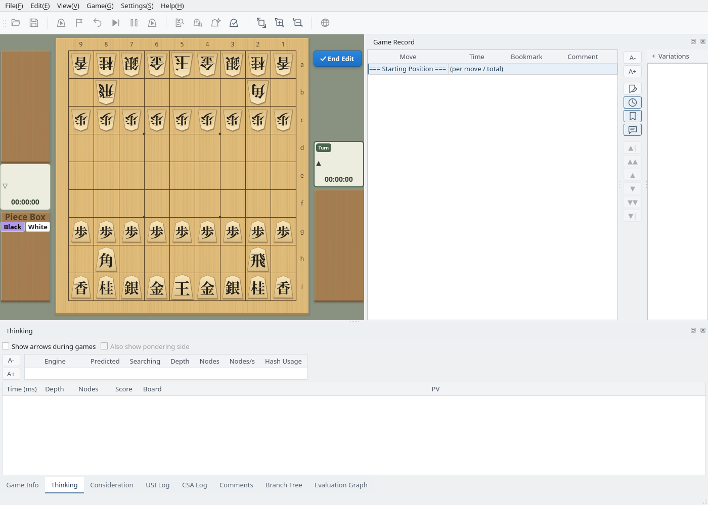
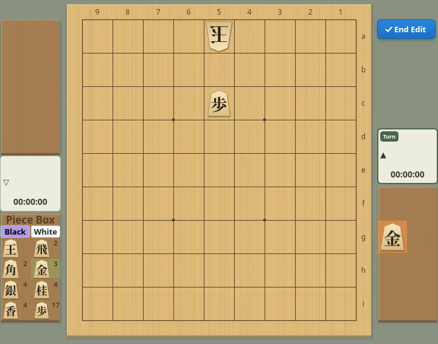
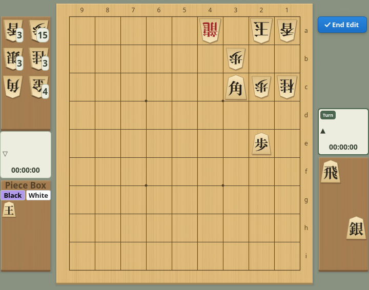
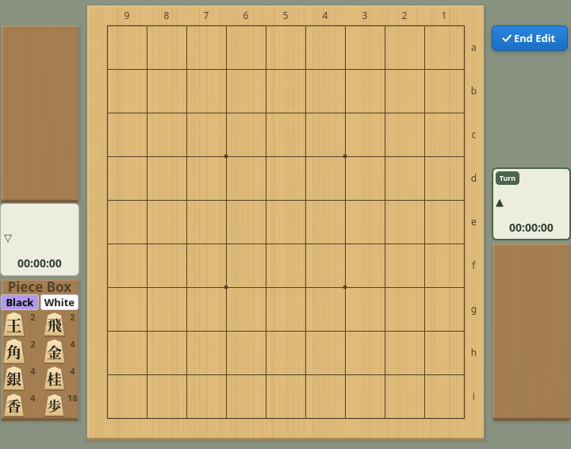
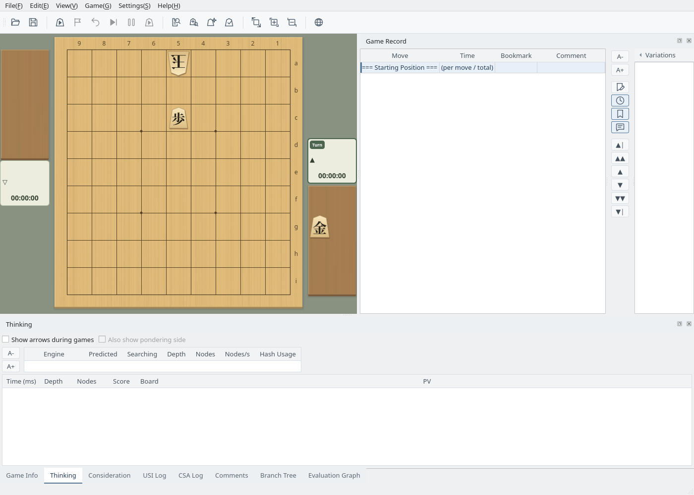

Arrange pieces freely to create any position
Screenshots were captured on Linux with the English interface.
Start from the displayed position and move or place pieces
Choose Edit → Start Position Edit. The displayed position becomes the starting point of the edit, and the game record is reduced to the “=== Starting Position ===” row (the evaluation graph is cleared too). If the game record has unsaved changes, you are first asked whether to save it.
While editing, the “✓ End Edit” button appears at the top right of the board and the piece box at the bottom left.

Editing: the End Edit button at the top right of the board and the piece box at the bottom left
Use the mouse as follows. A piece placed on the board or a piece stand belongs to the side of that place (placing it on the opponent’s stand makes it the opponent’s piece in hand).
Clear the board with Move All Pieces to Piece Box, choose White in the piece box and place the king on 5a, switch to Black and place a pawn on 5c, then put a gold on Black’s stand: a mate-in-one with a gold drop is ready.

Built from the piece box: White king on 5a, Black pawn on 5c, a gold in Black’s hand
Call common setups from the menu and switch the side to move
Edit → Even Game Setup returns to the standard starting position.
Edit → Tsume Shogi Setup places a sample tsume problem. All remaining pieces become the defender’s (White’s) pieces in hand and the attacker’s king goes into the piece box, as is customary for tsume problems. Move pieces from here to make your own problem.

Tsume Shogi Setup: remaining pieces in the defender’s hand, the attacker’s king in the piece box
Edit → Move All Pieces to Piece Box puts every piece on the board and the stands into the piece box. Use it to build a position from an empty board.

Move All Pieces to Piece Box: the board and stands are empty and the box shows the counts
Edit → Change Turn switches the side to move between Black and White. The side with the Turn badge on its player card moves next.
Use the edited position as the starting position for games and analysis
Click the “✓ End Edit” button (or Edit → End Position Edit). The edited position becomes the starting position of the game record and the piece box disappears.
From this position you can start a game (choose Current Position as the starting position), Consideration Mode, Mate Search and so on. A game needs exactly one Black king and one White king on the board.

After editing: the edited position is the starting position